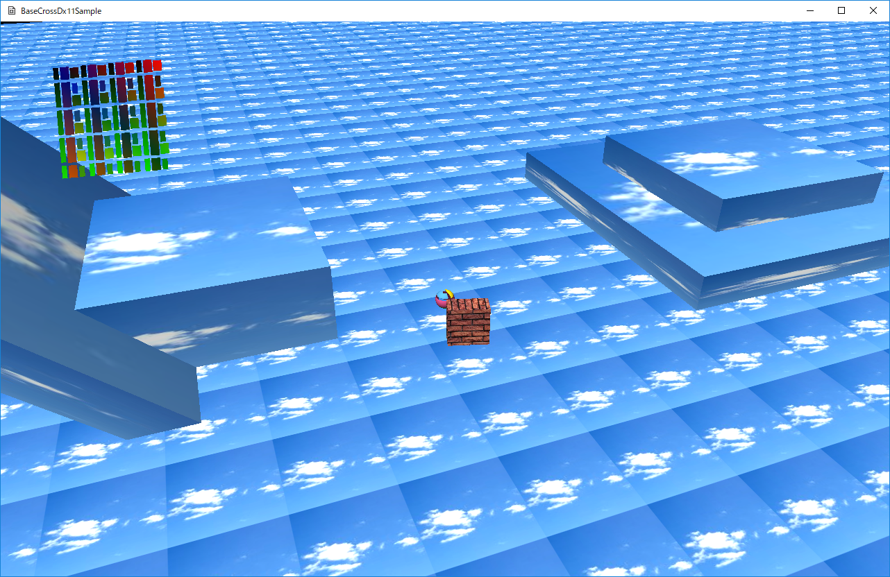

図0015a
１、コントローラやキーボードなどからの入力の受付 ２、プレイヤーの操作 ３、敵（またはほかのキャラクターやアイテムなど）のAI ４、衝突判定と衝突応答 ５、エフェクト ６、インターフェイス ７、ミュージック ８、効果音 ９、メニュー、サブメニューやステージ切り替えなどの機能 １０、ステージデータなどの読み込み機能 １１、プリミティブ形状作成やモデルの読み込みとその描画機能
１、コントローラからの入力の受付 ２、プレイヤーの操作 ３、敵（またはほかのキャラクターやアイテムなど）のAI ４、衝突判定と衝突応答
１、平面（SquareObject）。地面です。タイリング処理されています。 ２、プレイヤー（SphereObject）。コントローラで操作できます。 ３、ブロック（MoveBoxObject）。AIでプレイヤーをどこまでも追いかけてきます。 ４、固定の障害物（BoxObject）。プレイヤーは乗ることができる障害物です。 ５、スプライト（WrappedSprite）。左上で回転しているスプライトです。インターフェイス等に利用できるサンプルです。
void WrappedSprite::OnCreate() {
float HelfSize = 0.5f;
//頂点配列(縦横10個ずつ表示)
m_BackupVertices = {
{ VertexPositionColorTexture(Vec3(-HelfSize, HelfSize, 0),
Col4(1.0f,0,0,1.0f), Vec2(0.0f, 0.0f)) },
{ VertexPositionColorTexture(Vec3(HelfSize, HelfSize, 0),
Col4(0, 1.0f, 0, 1.0f), Vec2((float)m_XWrap, 0.0f)) },
{ VertexPositionColorTexture(Vec3(-HelfSize, -HelfSize, 0),
Col4(0, 0, 1.0f, 1.0f), Vec2(0.0f, (float)m_YWrap)) },
{ VertexPositionColorTexture(Vec3(HelfSize, -HelfSize, 0),
Col4(1.0f, 1.0f, 0, 1.0f), Vec2((float)m_XWrap, (float)m_YWrap)) },
};
//インデックス配列
vector<uint16_t> indices = { 0, 1, 2, 1, 3, 2 };
//メッシュの作成（変更できる）
m_SquareMesh = MeshResource::CreateMeshResource(m_BackupVertices, indices, true);
//テクスチャの作成
m_TextureResource = TextureResource::CreateTextureResource(m_TextureFileName, L"WIC");
}
void WrappedSprite::OnUpdate() {
float ElapsedTime = App::GetApp()->GetElapsedTime();
m_Rot += ElapsedTime;
if (m_Rot >= XM_2PI) {
m_Rot = 0;
}
UpdateVertex(ElapsedTime);
}
m_Rot += 0.01f;
void WrappedSprite::UpdateVertex(float ElapsedTime) {
m_TotalTime += ElapsedTime;
if (m_TotalTime >= 1.0f) {
m_TotalTime = 0;
}
auto Dev = App::GetApp()->GetDeviceResources();
auto pD3D11DeviceContext = Dev->GetD3DDeviceContext();
//頂点の変更
//D3D11_MAP_WRITE_DISCARDは重要。この処理により、GPUに邪魔されない
D3D11_MAP mapType = D3D11_MAP_WRITE_DISCARD;
D3D11_MAPPED_SUBRESOURCE mappedBuffer;
//頂点のマップ
if (FAILED(pD3D11DeviceContext->Map(m_SquareMesh->GetVertexBuffer().Get(),
0, mapType, 0, &mappedBuffer))) {
// Map失敗
throw BaseException(
L"頂点のMapに失敗しました。",
L"if(FAILED(pID3D11DeviceContext->Map()))",
L"WrappedSprite::UpdateVertex()"
);
}
//頂点の変更
VertexPositionColorTexture* vertices
= (VertexPositionColorTexture*)mappedBuffer.pData;
for (size_t i = 0; i < m_SquareMesh->GetNumVertices(); i++) {
Vec2 UV = m_BackupVertices[i].textureCoordinate;
if (UV.x == 0.0f) {
UV.x = m_TotalTime;
}
else if (UV.x == 4.0f) {
UV.x += m_TotalTime;
}
vertices[i] = VertexPositionColorTexture(
m_BackupVertices[i].position,
m_BackupVertices[i].color,
UV
);
}
//アンマップ
pD3D11DeviceContext->Unmap(m_SquareMesh->GetVertexBuffer().Get(), 0);
}
D3D11_MAP mapType = D3D11_MAP_WRITE_DISCARD;
D3D11_MAPPED_SUBRESOURCE mappedBuffer;
//頂点のマップ
if (FAILED(pD3D11DeviceContext->Map(m_SquareMesh->GetVertexBuffer().Get(),
0, mapType, 0, &mappedBuffer))) {
//頂点の変更
VertexPositionColorTexture* vertices
= (VertexPositionColorTexture*)mappedBuffer.pData;
for (size_t i = 0; i < m_SquareMesh->GetNumVertices(); i++) {
Vec2 UV = m_BackupVertices[i].textureCoordinate;
if (UV.x == 0.0f) {
UV.x = m_TotalTime;
}
else if (UV.x == 4.0f) {
UV.x += m_TotalTime;
}
vertices[i] = VertexPositionColorTexture(
m_BackupVertices[i].position,
m_BackupVertices[i].color,
UV
);
}
//アンマップ
pD3D11DeviceContext->Unmap(m_SquareMesh->GetVertexBuffer().Get(), 0);
//テクスチャとサンプラーの設定
ID3D11ShaderResourceView* pNull[1] = { 0 };
pD3D11DeviceContext->PSSetShaderResources(0, 1,
m_TextureResource->GetShaderResourceView().GetAddressOf());
//ラッピングサンプラー
ID3D11SamplerState* pSampler = RenderState->GetLinearWrap();
pD3D11DeviceContext->PSSetSamplers(0, 1, &pSampler);
//--------------------------------------------------------------------------------------
/*!
@brief 描画するオブジェクトを追加する
@param[in] MeshRes メッシュ
@param[in] TextureRes テクスチャ
@param[in] WorldMat ワールド行列
@param[in] Trace 透明処理するかどうか
@param[in] Wrap ラッピング処理するかどうか
@return なし
*/
//--------------------------------------------------------------------------------------
void AddDrawMesh(const shared_ptr<MeshResource>& MeshRes,
const shared_ptr<TextureResource>& TextureRes,
const Mat4x4& WorldMat,
bool Trace,bool Wrap = false);
void PNTDrawObject::AddDrawMesh(const shared_ptr<MeshResource>& MeshRes,
const shared_ptr<TextureResource>& TextureRes,
const Mat4x4& WorldMat,
bool Trace, bool Wrap) {
DrawObject Obj;
Obj.m_MeshRes = MeshRes;
Obj.m_TextureRes = TextureRes;
Obj.m_WorldMatrix = WorldMat;
Obj.m_Trace = Trace;
Obj.m_Wrap = Wrap;
m_DrawObjectVec.push_back(Obj);
}
void PNTDrawObject::OnUpdate() {
m_DrawObjectVec.clear();
}
| 要素数（size()関数の戻り値） | capacity（capacity()関数の戻り値） |
|---|---|
| 1 | 1 |
| 2 | 2 |
| 3 | 4 |
| 5 | 8 |
| 9 | 16 |
| 17 | 32 |
m_DrawObjectVec.clear();
//後始末
Dev->InitializeStates();
１、平面（SquareObject）。地面です。タイリング処理されています。 ２、プレイヤー（SphereObject）。コントローラで操作できます。 ３、ブロック（MoveBoxObject）。AIでプレイヤーをどこまでも追いかけてきます。 ４、固定の障害物（BoxObject）。プレイヤーは乗ることができる障害物です。
void SquareObject::CreateBuffers(float WrapX, float WrapY) {
float HelfSize = 0.5f;
vector<VertexPositionNormalTexture> vertices = {
{ VertexPositionNormalTexture(Vec3(-HelfSize, HelfSize, 0),
Vec3(0, 0, -1.0f), Vec2(0.0f, 0.0f)) },
{ VertexPositionNormalTexture(Vec3(HelfSize, HelfSize, 0),
Vec3(0, 0, -1.0f), Vec2(WrapX, 0.0f)) },
{ VertexPositionNormalTexture(Vec3(-HelfSize, -HelfSize, 0),
Vec3(0, 0, -1.0f), Vec2(0.0f, WrapY)) },
{ VertexPositionNormalTexture(Vec3(HelfSize, -HelfSize, 0),
Vec3(0, 0, -1.0f), Vec2(WrapX, WrapY)) },
};
vector<uint16_t> indices = {
0, 1, 2,
1, 3, 2,
};
//メッシュの作成（変更できない）
m_SquareMesh = MeshResource::CreateMeshResource(vertices, indices, false);
}
//メッシュの作成（変更できない）
m_SquareMesh = MeshResource::CreateMeshResource(vertices, indices, false);
//--------------------------------------------------------------------------------------
/// ボックスの親
//--------------------------------------------------------------------------------------
class BoxBase : public ObjectInterface, public ShapeInterface {
public:
//--------------------------------------------------------------------------------------
/*!
@brief コンストラクタ
*/
//--------------------------------------------------------------------------------------
BoxBase() :
ObjectInterface(),
ShapeInterface() {}
//--------------------------------------------------------------------------------------
/*!
@brief デストラクタ
*/
//--------------------------------------------------------------------------------------
virtual ~BoxBase() {}
//--------------------------------------------------------------------------------------
/*!
@brief OBBを得る（仮想関数）
@return OBB
*/
//--------------------------------------------------------------------------------------
virtual OBB GetOBB()const = 0;
//--------------------------------------------------------------------------------------
/*!
@brief 衝突判定をする（仮想関数）
@return なし
*/
//--------------------------------------------------------------------------------------
virtual void OnCollision() {}
//--------------------------------------------------------------------------------------
/*!
@brief 回転処理をする（仮想関数）
@return なし
*/
//--------------------------------------------------------------------------------------
virtual void OnRotation() {}
};
//--------------------------------------------------------------------------------------
/// 固定のボックス
//--------------------------------------------------------------------------------------
class BoxObject : public BoxBase {
//中略
public:
//中略
//--------------------------------------------------------------------------------------
/*!
@brief OBBを得る
@return OBB
*/
//--------------------------------------------------------------------------------------
virtual OBB GetOBB()const;
//--------------------------------------------------------------------------------------
/*!
@brief 初期化
@return なし
*/
//--------------------------------------------------------------------------------------
virtual void OnCreate() override;
//中略
};
void BoxObject::OnCreate() {
vector<VertexPositionNormalTexture> vertices;
vector<uint16_t> indices;
MeshUtill::CreateCube(1.0f, vertices, indices);
//メッシュの作成（変更できない）
m_BoxMesh = MeshResource::CreateMeshResource(vertices, indices, false);
//テクスチャの作成
m_TextureResource = ObjectFactory::Create<TextureResource>(m_TextureFileName, L"WIC");
}
MeshUtill::CreateCube(1.0f, vertices, indices);
//--------------------------------------------------------------------------------------
/// ゲームシーン
//--------------------------------------------------------------------------------------
class Scene : public SceneInterface {
shared_ptr<SquareObject> m_SquareObject; ///<平面オブジェクト
shared_ptr<SphereObject> m_SphereObject; ///<球オブジェクト
vector<shared_ptr<BoxBase>> m_BoxVec; ///<ボックスの配列
shared_ptr<PNTDrawObject> m_PNTDrawObject; ///<描画オブジェクト
shared_ptr<WrappedSprite> m_WallSprite; ///<スプライト
//以下略
void Scene::OnCreate() {
//中略
m_BoxVec.push_back(
ObjectFactory::Create<BoxObject>(
GetThis<Scene>(), strTexture, false,
Vec3(5.0f, 0.5f, 5.0f),
Quat(),
Vec3(5.0f, 0.25f, 0.0f)
)
);
//中略
m_BoxVec.push_back(
ObjectFactory::Create<BoxObject>(
GetThis<Scene>(), strTexture, false,
Vec3(5.0f, 0.5f, 5.0f),
Quat(Vec3(0, 0, 1), -XM_PIDIV4),
Vec3(-5.0f, 1.0f, 0.0f)
)
);
strTexture = DataDir + L"wall.jpg";
//移動ボックス
m_BoxVec.push_back(
ObjectFactory::Create<MoveBoxObject>(
GetThis<Scene>(), strTexture, false,
Vec3(0.25f, 0.5f, 0.5f),
Quat(),
Vec3(0.0f, 0.25f, 5.0f)
)
);
//中略
}
//--------------------------------------------------------------------------------------
/// ボックスの親
//--------------------------------------------------------------------------------------
class BoxBase : public ObjectInterface, public ShapeInterface {
public:
//中略
//--------------------------------------------------------------------------------------
/*!
@brief OBBを得る（仮想関数）
@return OBB
*/
//--------------------------------------------------------------------------------------
virtual OBB GetOBB()const = 0;
//--------------------------------------------------------------------------------------
/*!
@brief 衝突判定をする（仮想関数）
@return なし
*/
//--------------------------------------------------------------------------------------
virtual void OnCollision() {}
//--------------------------------------------------------------------------------------
/*!
@brief 回転処理をする（仮想関数）
@return なし
*/
//--------------------------------------------------------------------------------------
virtual void OnRotation() {}
};
void Scene::OnUpdate() {
//更新
m_SquareObject->OnUpdate();
m_SphereObject->OnUpdate();
for (auto& v : m_BoxVec) {
v->OnUpdate();
}
//衝突判定
m_SphereObject->OnCollision();
for (auto& v : m_BoxVec) {
v->OnCollision();
}
//回転処理
m_SphereObject->OnRotation();
for (auto& v : m_BoxVec) {
v->OnRotation();
}
//描画オブジェクトの更新
m_PNTDrawObject->OnUpdate();
m_WallSprite->OnUpdate();
//中略
}
void MoveBoxObject::UpdateVelosity() {
auto ShPtrScene = m_Scene.lock();
if (!ShPtrScene) {
return;
}
//フォース（力）
Vec3 Force(0, 0, 0);
//プレイヤーを向く方向ベクトル
Vec3 ToPlayerVec =
ShPtrScene->GetSphereObject()->GetPosition() - m_Pos;
//縦方向は計算しない
ToPlayerVec.y = 0;
ToPlayerVec *= m_Speed;
//力を掛ける方向を決める
Force = ToPlayerVec - m_Velocity;
//力と質量から加速を求める
Vec3 Accel = Force / m_Mass;
//前回のターンからの経過時間を求める
float ElapsedTime = App::GetApp()->GetElapsedTime();
//速度を加速する
m_Velocity += Accel * ElapsedTime;
}
１、直接、位置（Position）を変化させる ２、速度（Velocity）を変化させて、その値でPositionを動かす。 ３、力（Force）を作り出して、加速を加え、それで速度（Velocity）を変化させる。 最後に、Velocityの値でPositionを動かす。
void MoveBoxObject::CollisionWithBoxes(const Vec3& BeforePos) {
//前回のターンからの経過時間を求める
float ElapsedTime = App::GetApp()->GetElapsedTime();
//衝突判定
auto ShPtrScene = m_Scene.lock();
for (auto& v : ShPtrScene->GetBoxVec()) {
if (v == GetThis<BoxBase>()) {
//相手が自分自身なら処理しない
continue;
}
OBB DestObb = v->GetOBB();
OBB SrcObb = GetOBB();
SrcObb.m_Center = BeforePos;
float HitTime;
Vec3 CollisionVelosity = (m_Pos - BeforePos) / ElapsedTime;
if (HitTest::CollisionTestObbObb(SrcObb, CollisionVelosity, DestObb, 0, ElapsedTime, HitTime)) {
m_Pos = BeforePos + CollisionVelosity * HitTime;
float SpanTime = ElapsedTime - HitTime;
//m_Posが動いたのでOBBを再取得
SrcObb = GetOBB();
Vec3 HitPoint;
//最近接点を得るための判定
HitTest::ClosestPtPointOBB(SrcObb.m_Center, DestObb, HitPoint);
//衝突法線をHitPointとm_Posから導く
Vec3 Normal = m_Pos - HitPoint;
Normal.normalize();
//速度をスライドさせて設定する
m_Velocity = ProjUtil::Slide(m_Velocity, Normal);
//Y方向はなし
m_Velocity.y = 0;
//最後に衝突点から余った時間分だけ新しい値で移動させる
m_Pos = m_Pos + m_Velocity * SpanTime;
//追い出し処理
//少しづつ相手の領域から退避する
//最大10回退避するが、それでも衝突していたら次回ターンに任せる
int count = 0;
while (count < 20) {
//退避する係数
float MiniSpan = 0.001f;
//もう一度衝突判定
//m_Posが動いたのでOBBを再取得
SrcObb = GetOBB();
if (HitTest::OBB_OBB(SrcObb, DestObb)) {
//最近接点を得るための判定
HitTest::ClosestPtPointOBB(SrcObb.m_Center, DestObb, HitPoint);
//衝突していたら追い出し処理
Vec3 EscapeNormal = SrcObb.m_Center - HitPoint;
EscapeNormal.y = 0;
EscapeNormal.normalize();
m_Pos = m_Pos + EscapeNormal * MiniSpan;
}
else {
break;
}
count++;
}
}
}
}
//追い出し処理
//少しづつ相手の領域から退避する
//最大10回退避するが、それでも衝突していたら次回ターンに任せる
int count = 0;
while (count < 20) {
//退避する係数
float MiniSpan = 0.001f;
//もう一度衝突判定
//m_Posが動いたのでOBBを再取得
SrcObb = GetOBB();
if (HitTest::OBB_OBB(SrcObb, DestObb)) {
//最近接点を得るための判定
HitTest::ClosestPtPointOBB(SrcObb.m_Center, DestObb, HitPoint);
//衝突していたら追い出し処理
Vec3 EscapeNormal = SrcObb.m_Center - HitPoint;
EscapeNormal.y = 0;
EscapeNormal.normalize();
m_Pos = m_Pos + EscapeNormal * MiniSpan;
}
else {
break;
}
count++;
}
void SphereObject::OnUpdate() {
//1つ前の位置を取っておく
m_BeforePos = m_Pos;
//前回のターンからの経過時間を求める
float ElapsedTime = App::GetApp()->GetElapsedTime();
//コントローラの取得
auto CntlVec = App::GetApp()->GetInputDevice().GetControlerVec();
auto ShPtrScene = m_Scene.lock();
if (!ShPtrScene) {
return;
}
if (CntlVec[0].bConnected) {
if (!m_JumpLock) {
//Aボタン
if (CntlVec[0].wPressedButtons & XINPUT_GAMEPAD_A) {
m_BeforePos.y += 0.01f;
m_Pos.y += 0.01f;
m_GravityVelocity = Vec3(0, 4.0f, 0);
m_JumpLock = true;
}
}
Vec3 Direction = GetMoveVector();
if (Direction.length() < 0.1f) {
m_Velocity *= 0.9f;
}
else {
m_Velocity = Direction * 5.0f;
}
}
m_Pos += (m_Velocity * ElapsedTime);
m_GravityVelocity += m_Gravity * ElapsedTime;
m_Pos += m_GravityVelocity * ElapsedTime;
if (m_Pos.y <= m_BaseY) {
m_Pos.y = m_BaseY;
m_GravityVelocity = Vec3(0, 0, 0);
m_JumpLock = false;
}
}
void SphereObject::CollisionWithBoxes(const Vec3& BeforePos) {
//前回のターンからの経過時間を求める
float ElapsedTime = App::GetApp()->GetElapsedTime();
//衝突判定
auto ShPtrScene = m_Scene.lock();
for (auto& v : ShPtrScene->GetBoxVec()) {
OBB Obb = v->GetOBB();
SPHERE Sp = GetSPHERE();
Sp.m_Center = BeforePos;
float HitTime;
//相手の速度
Vec3 DestVelocity(0, 0, 0);
auto MovBoxPtr = dynamic_pointer_cast<MoveBoxObject>(v);
if (MovBoxPtr) {
DestVelocity = MovBoxPtr->GetPosition() - MovBoxPtr->GetBeforePos();
Obb.m_Center = MovBoxPtr->GetBeforePos();
}
Vec3 SrcVelocity = m_Pos - BeforePos;
Vec3 CollisionVelosity = (SrcVelocity - DestVelocity) / ElapsedTime;
if (HitTest::CollisionTestSphereObb(Sp, CollisionVelosity, Obb, 0, ElapsedTime, HitTime)) {
m_JumpLock = false;
m_Pos = BeforePos + CollisionVelosity * HitTime;
float SpanTime = ElapsedTime - HitTime;
//m_Posが動いたのでSPHEREを再取得
Sp = GetSPHERE();
Vec3 HitPoint;
//最近接点を得るための判定
HitTest::SPHERE_OBB(Sp, Obb, HitPoint);
//衝突法線をHitPointとm_Posから導く
Vec3 Normal = m_Pos - HitPoint;
Normal.normalize();
Vec3 angle(XMVector3AngleBetweenNormals(Normal, Vec3(0, 1, 0)));
if (angle.x <= 0.01f) {
//平面の上
m_GravityVelocity = Vec3(0, 0, 0);
}
else {
//重力をスライドさせて設定する
//これで、斜めのボックスを滑り落ちるようになる
m_GravityVelocity = ProjUtil::Slide(m_GravityVelocity, Normal);
}
if (MovBoxPtr) {
//お互いに反発する
Vec3 TgtVelo = CollisionVelosity * 0.5f;
if (TgtVelo.length() < 1.0f) {
//衝突時の速度が小さかったら、速度を作り出す
TgtVelo = MovBoxPtr->GetPosition() - m_Pos;
TgtVelo.normalize();
TgtVelo *= 2.0f;
}
Vec3 DestVelo(XMVector3Reflect(-TgtVelo, Normal));
DestVelo.y = 0;
MovBoxPtr->SetVelocity(DestVelo);
//速度を反発させて設定する
m_Velocity = XMVector3Reflect(TgtVelo, -Normal);
}
else {
//速度をスライドさせて設定する
m_Velocity = ProjUtil::Slide(m_Velocity, Normal);
}
//Y方向は重力に任せる
m_Velocity.y = 0;
//最後に衝突点から余った時間分だけ新しい値で移動させる
m_Pos = m_Pos + m_Velocity * SpanTime;
m_Pos = m_Pos + m_GravityVelocity * SpanTime;
//もう一度衝突判定
//m_Posが動いたのでSPHEREを再取得
Sp = GetSPHERE();
if (HitTest::SPHERE_OBB(Sp, Obb, HitPoint)) {
//衝突していたら追い出し処理
Vec3 EscapeNormal = Sp.m_Center - HitPoint;
EscapeNormal.normalize();
m_Pos = HitPoint + EscapeNormal * Sp.m_Radius;
}
}
}
}